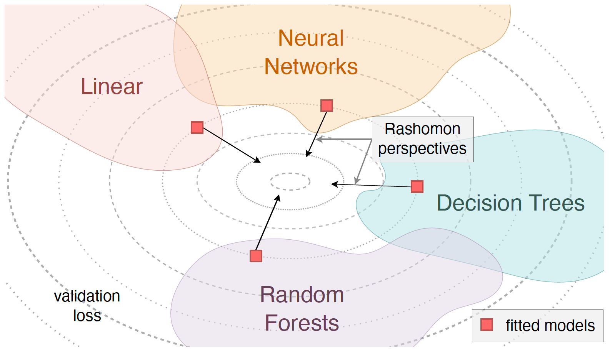
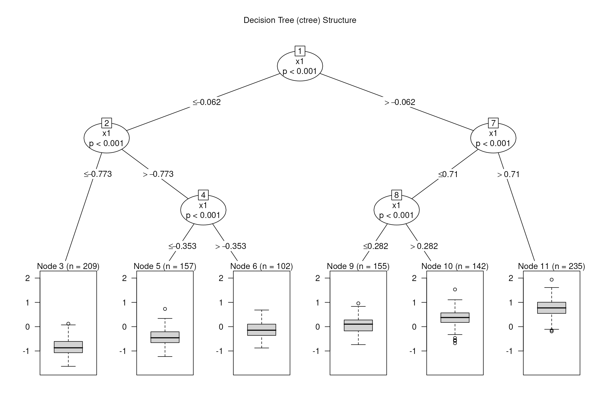
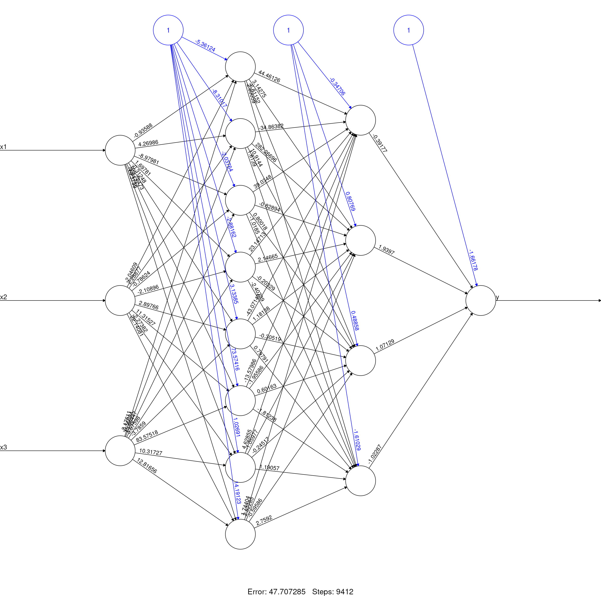
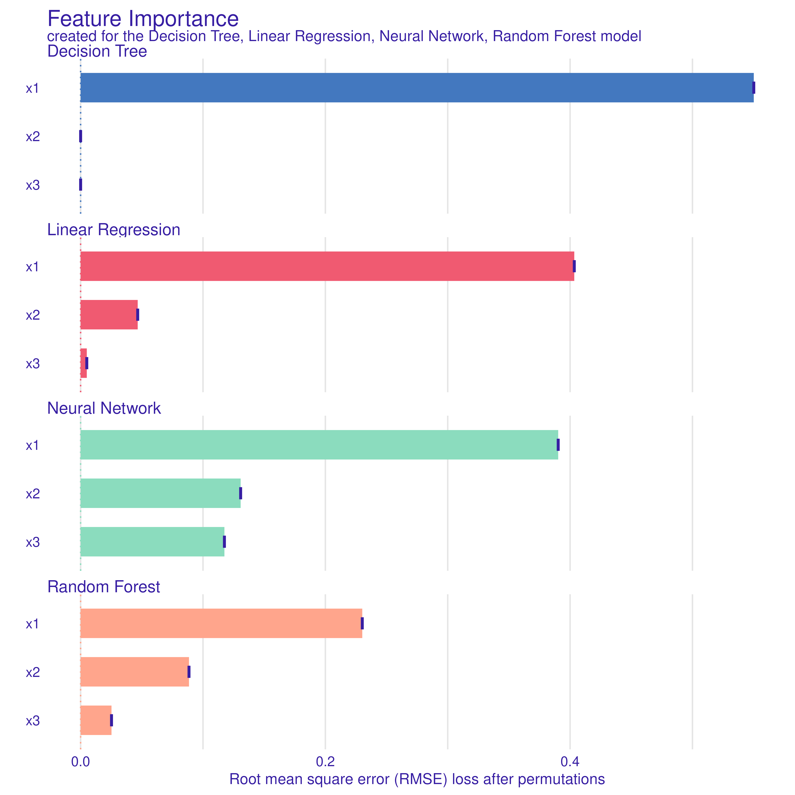
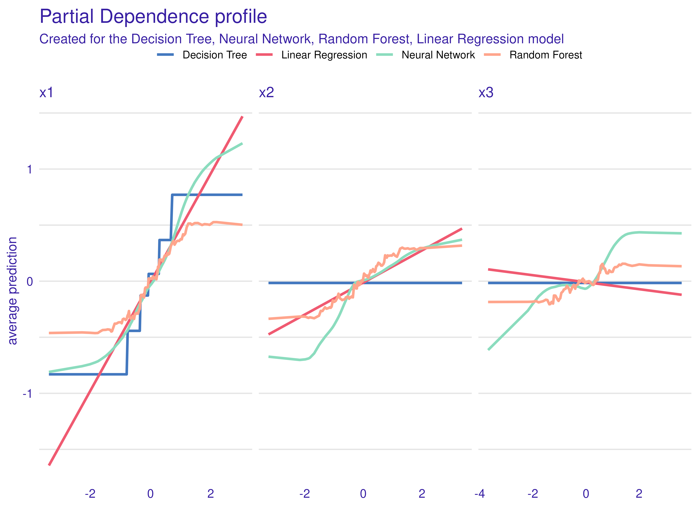

Unit 01: The Rashomon Quartet
Stephen Salerno
June 24, 2025
Source:vignettes/Unit01_RashomonQuartet.Rmd
Unit01_RashomonQuartet.RmdOverview
In “Performance is not enough: the story of Rashomon’s quartet” (Biecek et al., 2023), four different models (linear regression, decision trees, random forests, and neural networks) achieve near-identical predictive performance on the same dataset. However, their interpretations vary significantly. In this module, we will:
- Fit each model on a training set.
- Evaluate their predictive performance on a testing set.
- Demonstrate how the naive, classical, and IPD-based inference results differ.
Note: We will replicate the results of the Rashomon Quartet analysis following:
Background on the Rashomon Quartet
The underlying datasets are synthetically generated to include three covariates, , so that
The outcomes, , are then generated to depend only on and, to a lesser extent, , given by
Note: does not appear in the true data generating mechanism, but is highly correlated with and .
Two independent batches of 1,000 observations (a training set and a testing set) are generated under this model. We will fit the four candidate models on the 1,000-row training data, and evaluate them separately on the 1,000-row testing data. As we will show, all four achieve and on the testing set. However, their interpretations diverge:
- Linear regression captures a near-linear approximation of .
- Decision tree approximates the nonlinear relationship via a small set of splits.
- Random forest produces a smooth ensemble derivative of the tree.
- Neural network learns a different nonlinear basis with hidden units.

In addition to comparing interpretability across models, we will demonstrate how to perform valid downstream inference for on when is only partially observed. We will:
Train each predictive model on the full 1,000-row training set.
Predict on all 1,000 testing observations.
-
Randomly split the 1,000 testing rows into two groups:
- Labeled subset (with true observed).
- Unlabeled subset (with only predicted ).
In the labeled subset, regress on (“Classical”).
In the unlabeled subset, regress on (“Naive”).
Combine the two subsets and use
ipd::ipd()to correct bias and variance.
This mirrors realistic scenarios where the analytic dataset (here the testing set) has only some observations labeled, and we want to use model predictions for the rest while still making valid inference.
Setup and Data
# Install if needed:
# install.packages(c("ipd","DALEX","partykit","randomForest","neuralnet","GGally","tidyverse"))
library(ipd) # Inference with Predicted Data
library(DALEX) # Model Explanation
library(partykit) # Decision Trees
library(randomForest) # Random Forests
library(neuralnet) # Neural Networks
library(GGally) # Pairwise Plots
library(tidyverse) # Data Manipulation and VisualizationRead-In the Training and Testing Data
We have included two CSV files from the MI2DataLab/rashomon-quartet repository on GitHub. Note that these CSVs are semicolon-delimited.
# Use read_delim to parse semicolons
train <- read_delim("data/rq_train.csv", delim = ";", col_types = cols(), show_col_types = FALSE)
test <- read_delim("data/rq_test.csv", delim = ";", col_types = cols(), show_col_types = FALSE)
# Show the first few rows of each
glimpse(train)
#> Rows: 1,000
#> Columns: 4
#> $ y <dbl> -0.47048454, 0.17177895, 0.07295012, -0.34301361, 0.47167402, 0.191…
#> $ x1 <dbl> -0.51211395, 0.49038643, -0.89461065, 0.02725393, 0.44364997, -0.26…
#> $ x2 <dbl> -0.34174653, 0.25511508, -0.28744899, -0.09277031, 0.52147200, 0.28…
#> $ x3 <dbl> 0.255531783, -0.179610715, -0.310620340, -0.109603650, 0.920225141,…
glimpse(test)
#> Rows: 1,000
#> Columns: 4
#> $ y <dbl> -0.44547765, -0.67618374, -0.78822993, -0.55024530, -0.49205810, -0…
#> $ x1 <dbl> -0.553685719, -0.965436826, -0.962515641, -0.871816734, -1.96565982…
#> $ x2 <dbl> -0.74221752, -0.19959118, -1.25801758, -1.08469684, -1.43546177, -0…
#> $ x3 <dbl> -1.15266476, -1.00944121, -1.34017902, -0.84322216, -1.29871031, -0…Confirm Dimensions and Column Names:
- Each dataset should have exactly 1,000 rows and four columns:
y,x1,x2,x3.- We will use all 1,000 rows of
trainto fit each predictive model, and then randomly split the 1,000-rowtestfor IPD.
Predictive Model Training on the Training Set
Below, we fit four predictive models using the training set:
-
Decision Tree via
ctree()(max depth = 3, minsplit = 250). -
Linear Regression via
lm(). -
Random Forest via
randomForest()(100 trees). -
Neural Network via
neuralnet()(two hidden layers: 8 units, 4 units; threshold = 0.05).
We then evaluate each model’s performance in the testing set
using the DALEX package to extract the model’s
and
.
set.seed(1568)
# 1) Decision Tree (ctree)
model_dt <- ctree(
formula = y ~ x1 + x2 + x3,
data = train,
control = ctree_control(maxdepth = 3, minsplit = 250)
)
exp_dt <- DALEX::explain(
model = model_dt,
data = test |> select(x1, x2, x3),
y = test$y,
verbose = FALSE,
label = "Decision Tree"
)
mp_dt <- model_performance(exp_dt)
# 2) Linear Regression
model_lm <- lm(y ~ x1 + x2 + x3, data = train)
exp_lm <- DALEX::explain(
model = model_lm,
data = test |> select(x1, x2, x3),
y = test$y,
verbose = FALSE,
label = "Linear Regression"
)
mp_lm <- model_performance(exp_lm)
# 3) Random Forest
model_rf <- randomForest(
formula = y ~ x1 + x2 + x3,
data = train,
ntree = 100
)
exp_rf <- DALEX::explain(
model = model_rf,
data = test |> select(x1, x2, x3),
y = test$y,
verbose = FALSE,
label = "Random Forest"
)
mp_rf <- model_performance(exp_rf)
# 4) Neural Network
model_nn <- neuralnet(
formula = y ~ x1 + x2 + x3,
data = train,
hidden = c(8, 4),
threshold = 0.05,
linear.output = TRUE
)
predict_nn <- function(object, newdata) {
as.numeric(predict(object, newdata))
}
exp_nn <- DALEX::explain(
model = model_nn,
data = test |> select(x1, x2, x3),
y = test$y,
predict_function = predict_nn,
verbose = FALSE,
label = "Neural Network"
)
mp_nn <- model_performance(exp_nn)
# Save DALEX explainers for later reuse
save(exp_dt, exp_lm, exp_rf, exp_nn, file = "models.RData")
# Compile performance metrics into one data frame
mp_all <- list(
"Linear Regression" = mp_lm,
"Decision Tree" = mp_dt,
"Random Forest" = mp_rf,
"Neural Network" = mp_nn
)
R2_values <- sapply(mp_all, function(x) x$measures$r2)
RMSE_values <- sapply(mp_all, function(x) x$measures$rmse)
perf_df <- tibble(
Model = names(R2_values),
R2 = round(as.numeric(R2_values), 4),
RMSE = round(as.numeric(RMSE_values), 4)
)
perf_df
#> # A tibble: 4 × 3
#> Model R2 RMSE
#> <chr> <dbl> <dbl>
#> 1 Linear Regression 0.729 0.354
#> 2 Decision Tree 0.729 0.354
#> 3 Random Forest 0.728 0.354
#> 4 Neural Network 0.730 0.352Interpretation: All four models (Linear Regression, Decision Tree, Random Forest, Neural Network) deliver essentially identical predictive performance on the testing set:
Inspecting the Prediction Models
We now take a quick look at each model’s internal structure or summary.
Note:
- Often, in practice, we do not know the operating characteristics of the predictive model or have access to its training data.
- IPD methods are distinct in that they are agnostic to the source or form of these ‘black-box’ predictions
Decision Tree Visualization
plot(model_dt, main = "Decision Tree (ctree) Structure")
The tree has depth 3, with splits on that approximate piecewise.
Linear Regression Summary
summary(model_lm)
#>
#> Call:
#> lm(formula = y ~ x1 + x2 + x3, data = train)
#>
#> Residuals:
#> Min 1Q Median 3Q Max
#> -1.68045 -0.24213 0.01092 0.23409 1.26450
#>
#> Coefficients:
#> Estimate Std. Error t value Pr(>|t|)
#> (Intercept) -0.01268 0.01114 -1.138 0.255
#> x1 0.48481 0.03001 16.157 < 2e-16 ***
#> x2 0.14316 0.02966 4.826 1.61e-06 ***
#> x3 -0.03113 0.02980 -1.045 0.296
#> ---
#> Signif. codes: 0 '***' 0.001 '**' 0.01 '*' 0.05 '.' 0.1 ' ' 1
#>
#> Residual standard error: 0.352 on 996 degrees of freedom
#> Multiple R-squared: 0.7268, Adjusted R-squared: 0.726
#> F-statistic: 883.4 on 3 and 996 DF, p-value: < 2.2e-16The OLS coefficients show how the linear model approximates the underlying sine function. In particular, the slope on will be roughly an average of this over the training distribution.
Random Forest Summary
model_rf
#>
#> Call:
#> randomForest(formula = y ~ x1 + x2 + x3, data = train, ntree = 100)
#> Type of random forest: regression
#> Number of trees: 100
#> No. of variables tried at each split: 1
#>
#> Mean of squared residuals: 0.1193538
#> % Var explained: 73.58We see OOB MSE and variance explained on the training data. The forest builds many trees of depth >3 and averages them to approximate the sine structure.
Neural Network Topology
plot(model_nn, rep = "best", main = "Neural Network (8,4) Topology")
This diagram shows two hidden layers (8 units 4 units) with activation functions that capture nonlinearity. The network approximates more flexibly than the decision tree or random forest.
Variable Importance (DALEX)
Next, we compute variable importance for each model via
DALEX::model_parts(). We request
type="difference" so that importance is measured in terms
of loss of performance (RMSE) when that variable is permuted.
imp_dt <- model_parts(exp_dt, N = NULL, B = 1, type = "difference")
imp_lm <- model_parts(exp_lm, N = NULL, B = 1, type = "difference")
imp_rf <- model_parts(exp_rf, N = NULL, B = 1, type = "difference")
imp_nn <- model_parts(exp_nn, N = NULL, B = 1, type = "difference")
plot(imp_dt, imp_nn, imp_rf, imp_lm)
Interpretation:
- Each model ranks features by their impact on predictive accuracy.
- Because are correlated, some models (e.g. tree, forest) may split differently than linear regression or neural network.
Partial-Dependence Plots (DALEX)
We now generate partial-dependence (PD) profiles for each feature
under each model via DALEX::model_profile(). This shows how
each model’s predicted
changes when we vary one feature at a time, averaging out the
others.
pd_dt <- model_profile(exp_dt, N = NULL)
pd_lm <- model_profile(exp_lm, N = NULL)
pd_rf <- model_profile(exp_rf, N = NULL)
pd_nn <- model_profile(exp_nn, N = NULL)
plot(pd_dt, pd_nn, pd_rf, pd_lm)
Interpretation:
- For , the Linear Regression PD is a straight line.
- The Decision Tree PD is piecewise-constant.
- The Random Forest PD is smoother but still stepwise.
- The Neural Network PD approximates the sine shape.
Because does not appear in the generating formula, its PD should be nearly flat—though correlation can induce slight structure.
Inference with Predicted Data (IPD)
We now demonstrate how to perform valid inference in the testing set when only some test rows have true . Specifically, we:
-
Randomly split the 1,000 testing rows into:
- A labeled subset of size (we choose 10%, but this can be adjusted).
- An unlabeled subset of size .
In the labeled subset, regress on , , and (Classical).
In the unlabeled subset, regress on , , and (Naive).
-
Use both subsets in an IPD pipeline and run:
ipd_res <- ipd( formula = y - f ~ x1 + x2 + x3, data = test_labeled, unlabeled_data = test_unlabeled, method = "pspa", model = "ols" )to obtain bias-corrected estimates of , , and .
Note: Instead of supplying one stacked dataset and the column name for the set labels, we can alternativel supply the labeled and unlabeled data separately.
set.seed(12345)
# Predict outcomes in the testing set
ipd_data <- test |>
mutate(
preds_lm = c(predict(model_lm, newdata = test)),
preds_dt = c(predict(model_dt, newdata = test)),
preds_rf = c(predict(model_rf, newdata = test)),
preds_nn = c(predict(model_nn, newdata = test)))
# Randomly split the testing set into labeled and unlabeled subsets
frac_labeled <- 0.1
n_test <- nrow(ipd_data)
n_labeled <- floor(frac_labeled * n_test)
labeled_idx <- sample(seq_len(n_test), size = n_labeled)
test_labeled <- ipd_data |>
slice(labeled_idx) |>
mutate(set_label = "labeled")
test_unlabeled <- ipd_data |>
slice(-labeled_idx) |>
mutate(set_label = "unlabeled")
# Classical
class_fit <- lm(y ~ x1 + x2 + x3, data = test_labeled)
class_df <- broom::tidy(class_fit) |>
mutate(method = "Classical")
# Naive (Linear Model)
naive_fit_lm <- lm(preds_lm ~ x1 + x2 + x3, data = test_unlabeled)
naive_df_lm <- broom::tidy(naive_fit_lm) |>
mutate(method = "Naive (lm)")
# Naive (Decision Tree)
naive_fit_dt <- lm(preds_dt ~ x1 + x2 + x3, data = test_unlabeled)
naive_df_dt <- broom::tidy(naive_fit_dt) |>
mutate(method = "Naive (dt)")
# Naive (Random Forest)
naive_fit_rf <- lm(preds_rf ~ x1 + x2 + x3, data = test_unlabeled)
naive_df_rf <- broom::tidy(naive_fit_rf) |>
mutate(method = "Naive (rf)")
# Naive (Neural Net)
naive_fit_nn <- lm(preds_nn ~ x1 + x2 + x3, data = test_unlabeled)
naive_df_nn <- broom::tidy(naive_fit_nn) |>
mutate(method = "Naive (nn)")
# IPD (Linear Model)
ipd_fit_lm <- ipd(y - preds_lm ~ x1 + x2 + x3,
data = test_labeled, unlabeled_data = test_unlabeled,
method = "pspa", model = "ols")
ipd_df_lm <- tidy(ipd_fit_lm) |>
mutate(method = "IPD (lm)")
# IPD (Decision Tree)
ipd_fit_dt <- ipd(y - preds_dt ~ x1 + x2 + x3,
data = test_labeled, unlabeled_data = test_unlabeled,
method = "pspa", model = "ols")
ipd_df_dt <- tidy(ipd_fit_dt) |>
mutate(method = "IPD (dt)")
# IPD (Random Forest)
ipd_fit_rf <- ipd(y - preds_rf ~ x1 + x2 + x3,
data = test_labeled, unlabeled_data = test_unlabeled,
method = "pspa", model = "ols")
ipd_df_rf <- tidy(ipd_fit_rf) |>
mutate(method = "IPD (rf)")
# IPD (Neural Net)
ipd_fit_nn <- ipd(y - preds_nn ~ x1 + x2 + x3,
data = test_labeled, unlabeled_data = test_unlabeled,
method = "pspa", model = "ols")
ipd_df_nn <- tidy(ipd_fit_nn) |>
mutate(method = "IPD (nn)")
combined_df <- bind_rows(class_df,
naive_df_lm, naive_df_dt, naive_df_rf, naive_df_nn,
ipd_df_lm, ipd_df_dt, ipd_df_rf, ipd_df_nn) |>
mutate(
conf.low = estimate - 1.96 * std.error,
conf.high = estimate + 1.96 * std.error
)
combined_df
#> # A tibble: 36 × 8
#> term estimate std.error statistic p.value method conf.low conf.high
#> <chr> <dbl> <dbl> <dbl> <dbl> <chr> <dbl> <dbl>
#> 1 (Intercept) 0.00872 3.68e- 2 2.37e- 1 8.13e- 1 Classi… -0.0634 0.0808
#> 2 x1 0.643 1.09e- 1 5.91e+ 0 5.24e- 8 Classi… 0.430 0.856
#> 3 x2 0.0702 8.70e- 2 8.07e- 1 4.22e- 1 Classi… -0.100 0.241
#> 4 x3 -0.0791 9.94e- 2 -7.96e- 1 4.28e- 1 Classi… -0.274 0.116
#> 5 (Intercept) -0.0127 6.32e-18 -2.01e+15 0 Naive … -0.0127 -0.0127
#> 6 x1 0.485 1.67e-17 2.91e+16 0 Naive … 0.485 0.485
#> 7 x2 0.143 1.69e-17 8.45e+15 0 Naive … 0.143 0.143
#> 8 x3 -0.0311 1.70e-17 -1.83e+15 0 Naive … -0.0311 -0.0311
#> 9 (Intercept) -0.0183 6.76e- 3 -2.71e+ 0 6.89e- 3 Naive … -0.0315 -0.00506
#> 10 x1 0.546 1.78e- 2 3.06e+ 1 1.57e-141 Naive … 0.511 0.581
#> # ℹ 26 more rowsPlotting The Model Estimates
We now visualize, for each predictive model, the estimated coefficients and 95% confidence intervals from each inference method:
Note: The vertical dashed line marks the estimated slope for the Classical method, which serves as our benchmark for comparison.
ref_lines <- combined_df %>%
filter(method == "Classical") %>%
select(term, estimate)
ggplot(combined_df, aes(x = estimate, y = method, color = method)) +
geom_point(size = 2) +
geom_errorbarh(aes(xmin = conf.low, xmax = conf.high), height = 0.2) +
facet_wrap(~ term, ncol = 4, scales = "free_x") +
geom_vline(
data = ref_lines,
aes(xintercept = estimate),
linetype = "dashed",
color = "black"
) +
labs(
x = expression(hat(beta)),
y = "") +
theme_minimal() +
theme(legend.position = "none")
Interpretation of Results
- The Naive estimates are biased due to the prediction error and has artificially narrow confidence intervals.
- The Classical is our benchmark, as it is unbiased, but has wider CI’s
- The IPD methods cover the Classical estimates and have wider CI’s to account for the prediction uncertainty.
Data Distribution: Train vs Test (GGally::ggpairs)
Finally, we visualize pairwise relationships among for train vs test. This confirms that train and test were drawn from the same synthetic distribution.
both <- bind_rows(
train |> mutate(label = "train"),
test |> mutate(label = "test")
)
ggpairs(
both,
columns = c("x1", "x2", "x3", "y"),
mapping = aes(color = label, alpha = 0.3),
lower = list(
continuous = wrap("points", size = 0.5, alpha = 0.3),
combo = wrap("facethist", bins = 20)
),
diag = list(
continuous = wrap("densityDiag", alpha = 0.4, bw = "SJ")
),
upper = list(
continuous = wrap("cor", size = 3, stars = FALSE)
)
) +
theme_minimal() +
labs(
title = "Pairwise Distribution: Train vs Test (x1,x2,x3,y)",
subtitle = "Color = train (blue) vs test (pink)"
)
Interpretation:
- The diagonals show almost identical marginal distributions of in train vs test.
- The off-diagonals confirm the covariance structure is consistent across both sets.
Summary and Takeaways
-
Predictive Performance:
- Linear Regression, Decision Tree, Random Forest, and Neural Network each achieve nearly identical test set performance ().
-
Model Interpretability:
- Variable Importance and Partial-Dependence plots highlight how each model “tells a different story” about which features matter and how responds to .
- The Neural Network’s PD best tracks the true sine function; the tree’s PD is piecewise-constant; the forest’s PD is smoothed piecewise; the linear PD is a straight line.
-
Inference on Predicted Data (IPD):
- By randomly splitting the test set into “labeled” and “unlabeled” halves, we simulate a real-world scenario where only some new observations have true .
- Naive regression of on the unlabeled set is biased due to prediction error.
- Classical regression of on the labeled set is unbiased but less efficient.
- IPD methods combine the labeled/unlabeled sets to correct bias and properly estimate variance.
-
Key Lesson:
- “Performance is not enough.” Even models with identical can lead to very different bias and variance in downstream inference on covariate effects. IPD provides a principled correction when using model predictions in place of true outcomes for some observations.
References
- Biecek, Przemysław, et al. “Performance is not enough: The story told by a Rashomon Quartet.” Journal of Computational and Graphical Statistics 33.3 (2024): 1118-1121.
- MI2DataLab. “The Rashomon Quartet.” GitHub repository (2023).
This is the end of the module. We hope this was informative! For question/concerns/suggestions, please reach out to ssalerno@fredhutch.org